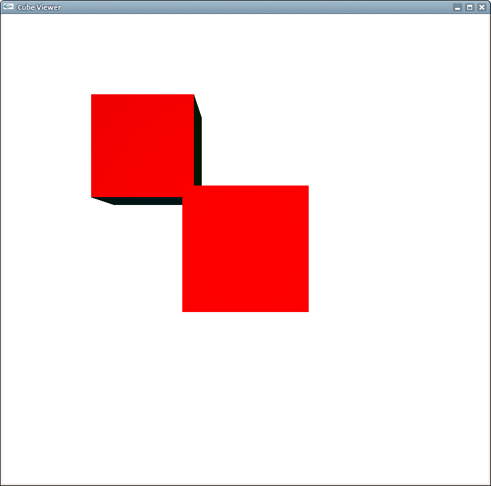

by Amos Wenger and Javier Martín de Valmaseda
Not much to say here, except that we added ostream overloading to Vector2, Vector3, Vector4 and Matrix4 to make it easier to debug.
It was really not clear from the slides what to do in getScreenExtents() but we finally figured it out.
It was a simple matter of applying the formula. Getting rid of the case when light ray and normal point are in opposite directions is as simple as verifying that (N dot L) >= 0. Indeed, cos(theta) will be negative if abs(theta) > pi/2

At first we had problems: we were doing scene->getCamera()->getPosition() - iData->sourcePosition for V.. and then we later realized that we should have been doing iData->sourcePosition - iData->position.

Apart from that, nothing too hard. Didn't use the course's formula to compute R, just did a bit of thinking, projections, subtractions etc. and ended up simplifying and stumbling upon the same formula :)
Implementing the getNonOccludedLights required to cast rays from the light source's position and the given points - if there is an intersection then it's occluded, otherwise it's non-occluded. So it was necessary to change the Scene::fastIntersect method to check this condition.

Verifying that the intersection is between the light source and the occluded point is as simple as checking that t = intersectionPos dot rayNormal is bigger than ray's min_t and smaller than ray's max_t.
Assigning m_reflectionPercentage to iData was enough.
It's necessary to calculate the reflected ray, R, and then calculate the color of the point by the given formula, taking into account the recursion. As stated in the statement, it's necessary to fix the min_t of the ray with epsilon_t for avoid the shadow ray blocked by self-intersection
Here's a rendering of InfiniteRoom with reflection set to 0